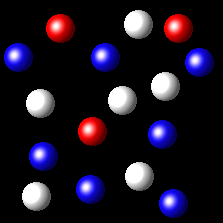
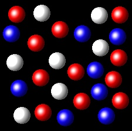

Gases 7
Las partículas correspondientes a tres sustancias gaseosas se han representado mediante bolas blancas, azules y rojas. Las siguientes figuras representan porciones representativas de las tres sustancias en estado gaseoso, ocupando todas ellas el mismo volumen y a la misma temperatura.
|  |  |
 |
¿Cuál de dichas figuras tiene la mayor fracción molar en la sustancia representada por bolas blancas?